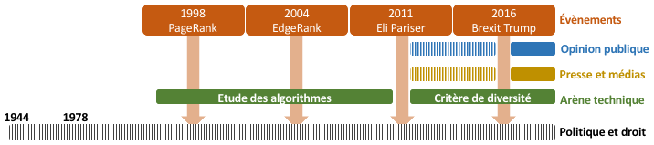

Chronologie

L'évolution temporelle de la controverse semble se scinder en trois phases :
- Une mise en place du contexte entre les débuts d'Internet et 2011 : les géants du web perfectionnent leurs algorithmes de personnalisatin de contenu seule l'arène technique semble alors manifester de l'intérêt pour ces algorithmes
- Une émergence de la controverse entre 2011 et 2016 : Eli Pariser invente le concept de "filter bubble" en 2011, la presse généraliste commence timidement à s'emparer du sujet, mais c'est toujours la presse scientifique qui s'y intéresse le plus
- Une explosion de la controverse : suite au Brexit et à l'élection de Donald Trump les filters bubbles sont pointées du doigt aussi bien par l'opinion publique que par la presse et les politiques
Voir la frise chronologie